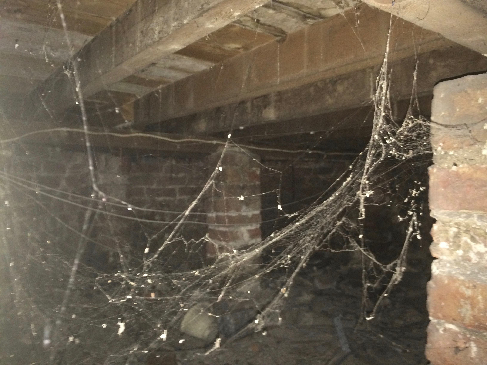
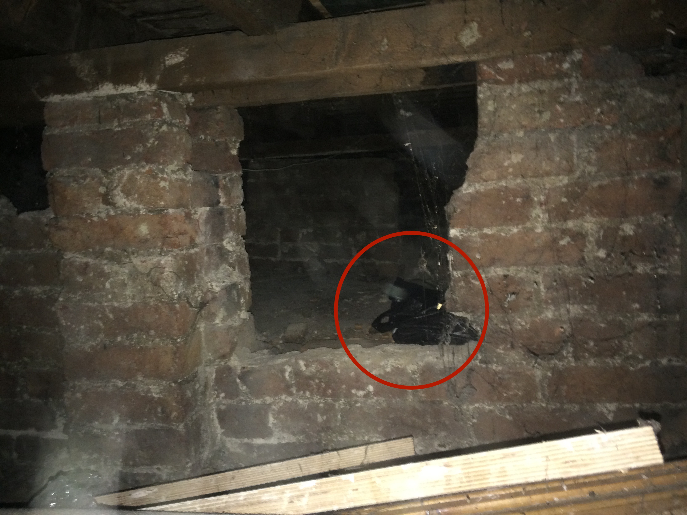

Last year the online community was gripped by the strange story of undying_truant. This website has been created to tell this story after many of the original threads have been deleted. The myserty began after the reddit user undying_truant posted in r/advice about a strange discovery in their basement. The following text is a copy of their original post, which I had saved prior to the thread's deletion.
"A few months ago I moved into a new house. Cheaper than the average rent in the area, with the catch being that the house was in a very bad way - really messy, filled with belongs of previous tenants, and with a mouse problem. The house had a kind of creepy atmosphere but I put this down to the mess. I recently lost my job (which prompted the move) and so had more time than usual to clean things up so didn’t see this to be a huge drawback.
When I moved in I spent the first few days deep cleaning everything and found some quite unusual things - the skeleton of a dead mouse, notebooks filled with odd and seemingly incoherent ramblings, a box full of shards of broken glass. But I cleaned this all up, called pest control, and the house was on the way up. The next task was the basement - a relatively large space with mountains of clutter and old belongings. It took a whole just to clean out enough rubbish to be able to access the main space.
The things in the basement were largely things you’d expect to find - boxes of Christmas decorations, bags full of old clothes, broken electronics, old mattresses. However something that unsettled me was seeing a boarded up area which seems like it hasn’t been accessed for a really long time. I broke through the cover which opened up into a large crawl space. Shining my torch into the area I couldn’t see anything in there but curiosity got the better of me and I decided to go inside of it.


The atmosphere inside the crawl space was very sinister as I’m sure you can imagine but I couldn’t see much inside. That is, until I found a black plastic bag hidden near the back. There wasn’t space to look inside from within the crawl space but I managed to drag it out and bring it into the main area of the basement. Inside the box was a bunch of old cassette tapes.
The covers looked kind of normal at first but in each the faces of people pictured had been cut out, and each tape was numbered. At this point I started to feel really creeped out. Why were the tapes hidden in such an odd place? Why have the covers been altered in this way? I don’t have a cassette player and been able to listen the recordings, but I am going to order one and will update this thread and let you know what’s on them."
After this origninal post it was several weeks before undying_truant posted again in the thread. Many assumed that the user would not return, and some speculated that their initial post had been a hoax. Unfortunately, this was not the case. What follows is a copy of undying_truant's second post.
"After accquiring a cassette player it seems like the tapes are blank. I have been a bit busy with house and job applications recently so haven't had the time to listen through everything. I will update if I find anything."
After this message the interest in the thread subsided. However around a week later undying_truant followed up with another post.
"I listened back through some of the tapes and, although they seem to be laregely blank, there are moments where some incredibly strange noises are played. Not musical at all, just disturbing noise and electronic sounds. These short bursts of sound seem to be placed randomly on some of the tapes, surrounded by silence on either side. I think I must have had an issue with the tape player before as I have heard sounds on cassette's which were initially blank.
A friend has been able to digitise some of the sound for me,and I've linked two bits of audio here [ed. linked below]. For each these seemed to be the only audio on that tape. If anyone has any information about them, or recognises the sounds in some way then please reply or write to me.
I've also taken some more photos of the covers. Please let me know if you recognise any of these or have any information at all."
PART THREE
Outro Text: Johnny Truant serves a dual role, as primary editor of Zampanò's academic study of The Navidson Record and protagonist as revealed through footnotes and appendices.
In the beginning of the book, Truant appears to be a normal, reasonably attractive young man who happens upon a trunk full of notes left behind by the now deceased Zampanò. As Truant begins to do the editing, however, he begins to lose the tenuous grip he has on reality, and his life begins to erode around him. He stops bathing, rarely eats, stops going to work, and distances himself from essentially everyone, all in pursuit of organizing the book into a finished work that, he hopes, will finally bring him peace.
Initially intrigued by Zampanò's isolative tendencies and surreal sense of reality, Johnny unknowingly sets himself up as a victim to the daunting task that awaits him. As he begins to organize Zampanò's manuscripts, his personal footnotes detail the deterioration of his own life with analogous references to alienation and insanity: once a trespasser to Zampanò's mad realm, Truant seems to become more comfortable in the environment as the story unfolds. He even has hallucinations that parallel those of Zampanò and members of the house search team when he senses "...something inhuman..." behind him (House of Leaves, page 26).